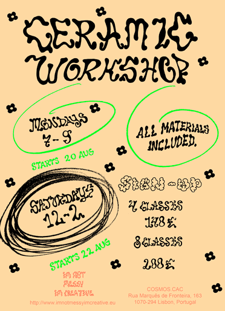
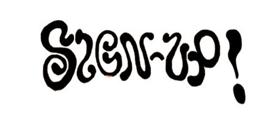

With Im Not Messy Im Creative

THE BEST Ceramic Workshops in Lisbon begins on the Saturday 20th & Monday 22nd of August.
After that the classes will run monthly and you can subscribe to either 4 classes or 8 classes.
This is a handbuilding class in a fun, relaxed and creative enviroment.
WHERE:
At the studio of Im_Not_Messy_Im_Creative
at Cosmos.Cac / Campolide Atlethico Clube.
PRICE:
4 Classes 140 € (Including all materials & 2 kilns)
8 Classes 200 € (Including all materials & 2 kilns)
TIMES:
Saturdays 12 PM - 2 PM
Mondays 7 PM - 9 PM
INCLUDING:
Materials (Clay, Paint,Tools), 2 x Kilns, Valuable time of teacher & sometimes wine :)
You will learn or not learn how to:
- Develop your creative ideas.
- Make weird sculptures, bowls, vases,cups or whatever your heart desires.
- Mix engobes & paint obscure patterns.
And other things you would not learn elsewhere!
Classes are held every week, but you sign up to four/eight classes at a time.
This way you will be able to follow up on your pieces, and learn all the steps of the process.
Maximum capacity per class is 5 people which makes these classes a unique and intimate experience.
